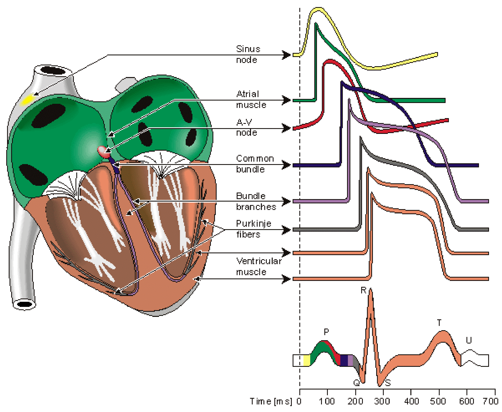

| In
the figure on the right, you see that the integrated ECG corresponds to
the sum of the electrical activity coming from the different myocytes
forming the atria and ventricles. From the point of view of signal
analysis, the ECG gives us an incomplete information from the status of
the heart. To infer the "real" state of the heart from the ECG is
indeed a mathematically "ill-posed" problem and it requires great care.
In order to get better information from the ECG, I use new algorithms
that are beyond the linear tools (Fourier analysis and correlation
functions), like Lyapunov spectrum, signal entropy and fractal
dimension. |  |